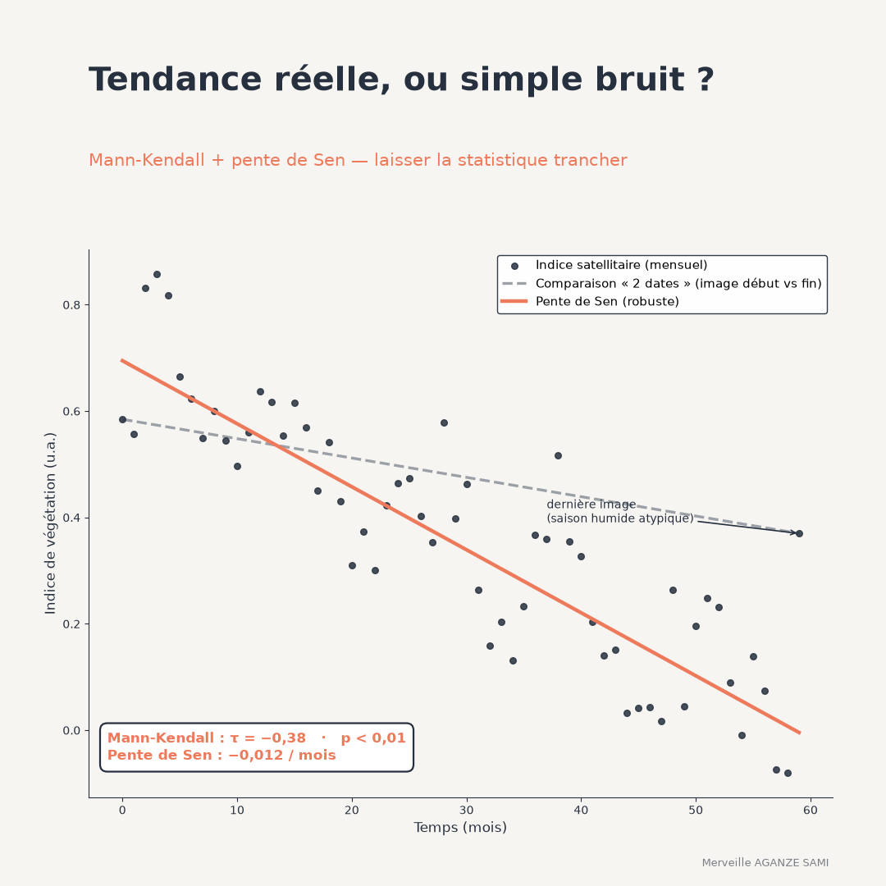

Assessing environmental change from satellite imagery often takes the form of a visual reading: two dates are compared, or an index curve is examined over a few years, and a conclusion is drawn. This approach has a known limitation — the eye struggles to separate an underlying trend from a succession of variations caused by an atypical season, changing acquisition conditions or missing data.
Satellite index series combine precisely the features that make visual appraisal unreliable: strong seasonality, extreme values linked to clouds or shadows, irregular time steps, and sometimes a sensor change mid-series. A statistical test suited to these constraints provides a verifiable answer.
1. What the Mann-Kendall statistic tests
The test rests on a simple principle: for each pair of observations in the series, one records whether the later value exceeds or falls below the earlier one. The statistic aggregates these comparisons; a marked excess of increasing or decreasing pairs signals a monotonic trend (Mann, 1945). The general formulation of this type of rank correlation stems from work on non-parametric correlation methods (Kendall, 1975).
Two properties explain its common use in environmental monitoring. The test assumes no distributional form, which suits bounded and skewed indices. And because it works only on ranks, an isolated outlier has little influence on the result, unlike in ordinary linear regression.
One interpretive point matters: the test detects a monotonic trend, that is, one consistently oriented in the same direction, not necessarily a linear one. A series that degrades then stabilises does not fall within this framework.
Sen's slope. The test indicates the existence of a trend but does not quantify its magnitude. The associated estimator computes the slope between every pair of observations, then takes the median of all these slopes (Sen, 1968). The result is expressed in the indicator's unit per unit of time — for instance a change in vegetation index per year — and inherits the median's robustness to extreme values.
2. The independence assumption
The test assumes observations are independent of one another. Environmental series frequently violate this condition: a monthly value depends largely on the previous one, and seasonality creates a periodic dependence structure. Under positive autocorrelation, the variance of the statistic is understated, leading to trends being declared significant when they are not.
Two corrections are in common use. The first adjusts the variance of the statistic to account for the observed autocorrelation structure (Hamed & Rao, 1998). The second removes the autocorrelated component before applying the test; this approach is delicate, however, since it also reduces the very trend one seeks to detect and lowers the power of the test (Yue et al., 2002).
For seasonality, a variant applies the test separately to each position in the cycle — all Marches together, for instance — then aggregates the results. An alternative is to work on the trend component from a prior decomposition, an approach presented in the article on seasonal decomposition.
3. Application to satellite index series
Applying this test pixel by pixel to vegetation index series is established practice for mapping cover dynamics at large scale (de Jong et al., 2011). It nonetheless calls for specific precautions.
- Unequal observation counts across pixels. After cloud masking, some pixels have markedly shorter series than others. Test power then varies across space, and a significance map partly reflects data availability. The number of valid observations should be mapped alongside.
- Sensor change. A transition between two instruments within the same series introduces a systematic offset that the test will read as a trend. Prior harmonisation or segmentation of the series is required.
- Multiple testing. Applying the test to several hundred thousand pixels produces a substantial number of significant results through multiplicity alone. A false discovery rate correction is essential — the principle is detailed in the article on hot spots.
- Significance and magnitude. A trend may be significant and negligible, or strong and non-significant on a short series. Both results must be mapped together: the slope map without the significance map, or the reverse, leads to erroneous readings.
4. What to report
A usable result contains four elements: the value of the rank correlation statistic and its sign, the associated significance level, the estimated slope expressed in the indicator's unit per year, and the number of observations used. To these are added the period covered, the treatment applied to autocorrelation and seasonality, and the multiple-testing correction rule where relevant.
This information turns an observation of change into a verifiable result. It also allows comparison across sites or periods, which a qualitative appraisal does not.
Key points
- The test compares pairs of observations and assumes no distributional form
- It detects a monotonic trend, not necessarily linear, and not a break
- Sen's slope quantifies annual change robustly against extreme values
- Autocorrelation and seasonality must be handled, otherwise significance is overstated
- Significance and magnitude are two distinct results that must be reported together
Satellite imagery supplies the signal; it does not supply the verdict. It is the statistical procedure applied to that signal that establishes whether a change is demonstrated, and of what magnitude.
References
- de Jong, R., de Bruin, S., de Wit, A., Schaepman, M. E., & Dent, D. L. (2011). Analysis of monotonic greening and browning trends from global NDVI time-series. Remote Sensing of Environment, 115(2), 692–702. doi.org/10.1016/j.rse.2010.10.011
- Hamed, K. H., & Rao, A. R. (1998). A modified Mann-Kendall trend test for autocorrelated data. Journal of Hydrology, 204(1–4), 182–196. doi.org/10.1016/S0022-1694(97)00125-X
- Kendall, M. G. (1975). Rank Correlation Methods (4th ed.). London: Charles Griffin.
- Mann, H. B. (1945). Nonparametric Tests Against Trend. Econometrica, 13(3), 245–259. doi.org/10.2307/1907187
- Sen, P. K. (1968). Estimates of the Regression Coefficient Based on Kendall's Tau. Journal of the American Statistical Association, 63(324), 1379–1389. doi.org/10.1080/01621459.1968.10480934
- Yue, S., Pilon, P., Phinney, B., & Cavadias, G. (2002). The influence of autocorrelation on the ability to detect trend in hydrological series. Hydrological Processes, 16(9), 1807–1829. doi.org/10.1002/hyp.1095

Merveille Aganze Sami
MEL & Database Management Advisor. 9+ years of experience in monitoring & evaluation, GIS and digitalization with international organizations (GIZ, Enabel) in DR Congo.
Environmental monitoring to ground in evidence?
Get in touch